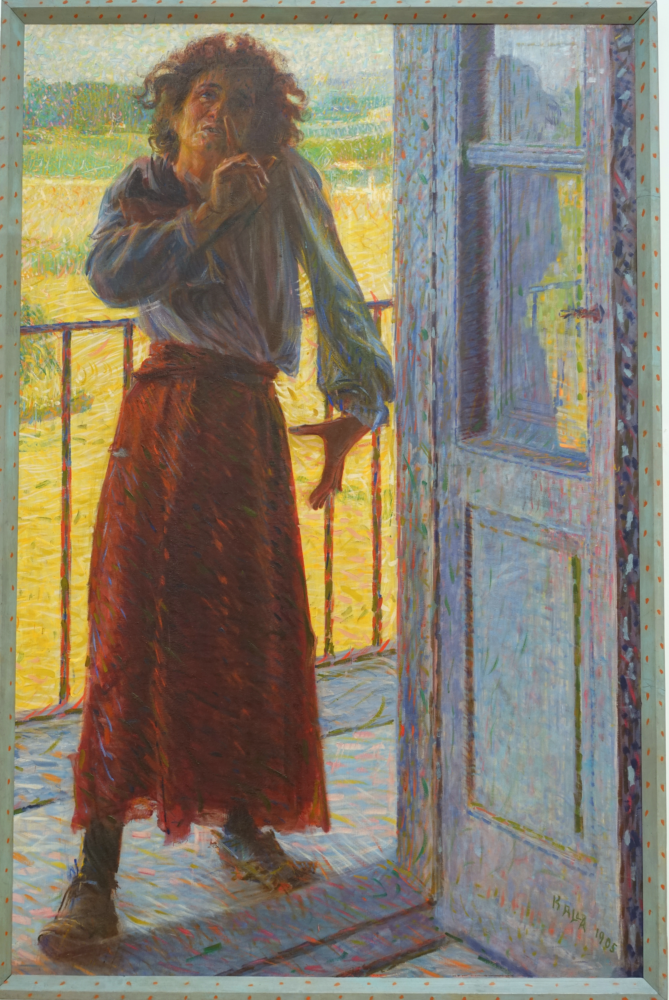
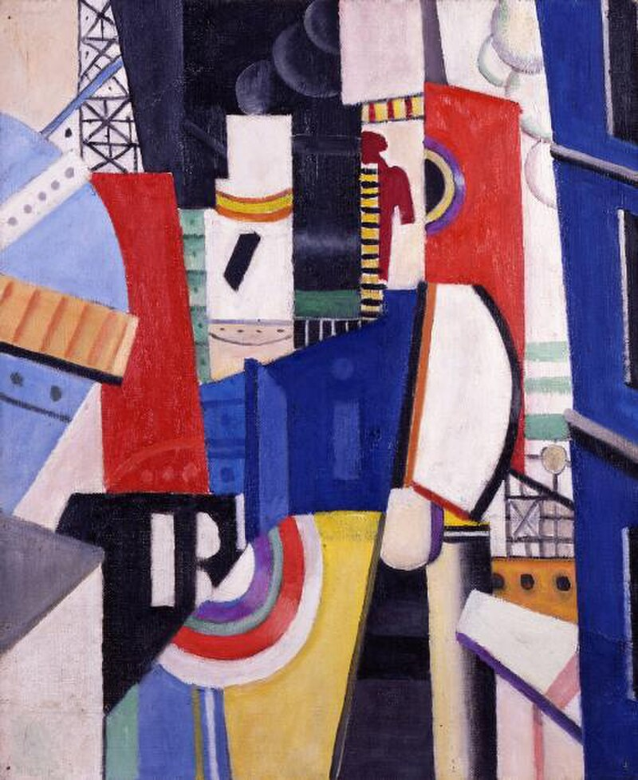
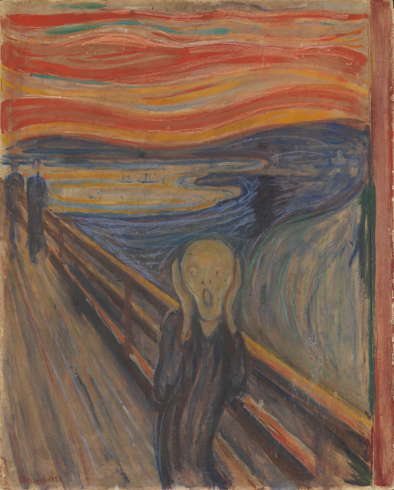
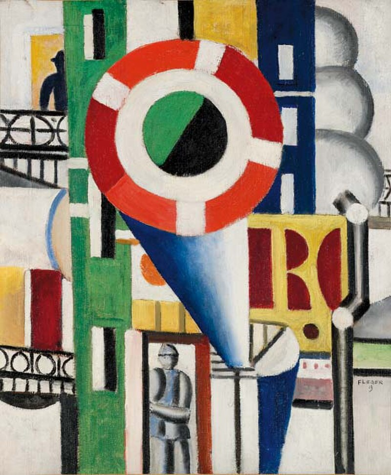
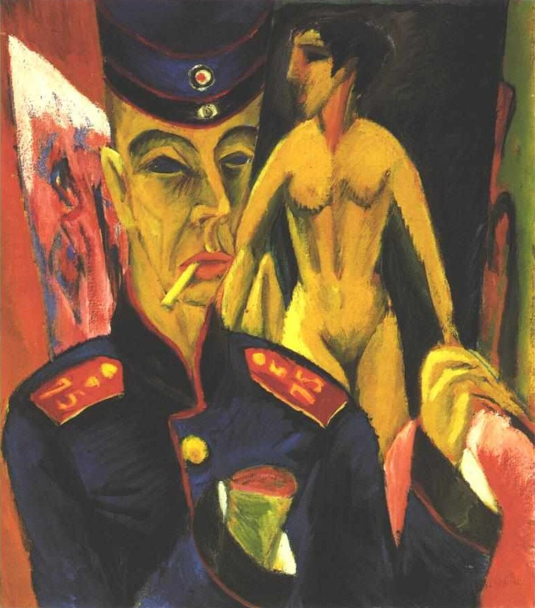
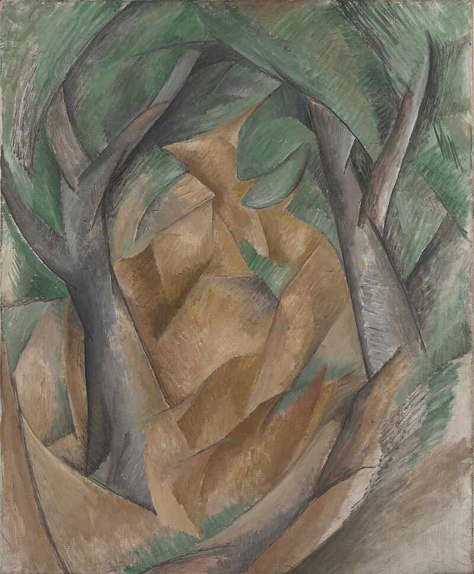

Meesterwerk: Dynamiek van een Hond
Giacomo Balla, 1912

⚜️ UITGEBREIDE STIJLFIGUREN
💨 DYNAMIEK & BEWEGING
Chronofotografie: Beweging opgebroken in sequenties, geïnspireerd door Muybridge en Marey.
Snelheid: Treinen, auto's, vliegtuigen - de moderne wereld in beweging.
🔗 Tijdsgeest Connecties
Historisch: Auto (Ford Model T 1908), vliegtuig (Wright 1903), trein - alles wordt sneller
Technologie: Telegraaf, radio, telefoon - informatie reist sneller dan mensen
Politiek: Marinetti's manifest (1909) viert snelheid als nieuwe god
🔨 FRAGMENTATIE
Objecten opgebroken: In dynamische facetten, beïnvloed door Kubisme.
Lijnen van kracht: Dynamische lijnen die beweging suggereren, energie visualiseren.
🔗 Tijdsgeest Connecties
Politiek: Fascisme - de oude wereld moet worden vernietigd
Filosofie: Nietzsche's "Alles wat recht is, liegt" - chaos en fragmentatie als waarheid
Wetenschap: Röntgenstralen (1895) - binnenkant zichtbaar, materie is niet solide
🔥 GEWELD & OORLOG
Glorificatie: Oorlog als "hygiëne van de wereld" - vernietiging als schepping.
Machine-esthetiek: De mens wordt machine, de machine wordt kunst.
🔗 Tijdsgeest Connecties
Politiek: Italiaans fascisme (Mussolini 1922) - Futuristen steunen de beweging
Historisch: Italiaans-Turkse Oorlog (1911), WO I (1914-1918) - technologie als wapen
Filosofie: Marinetti: "Wij willen oorlog verheerlijken - de enige hygiëne van de wereld"
🚗 TECHNOLOGIE & MODERNITEIT
De machine: Auto's, fabrieken, vliegtuigen als onderwerp én inspiratie.
Anti-verleden: Musea, bibliotheken, academies moeten worden vernietigd.
🔗 Tijdsgeest Connecties
Historisch: Industrialisatie van Italië - van agrarisch naar modern
Politiek: Anti-klerikaal - de kerk vertegenwoordigt het oude, trage Italië
Literatuur: "Woorden in vrijheid" - typografie breekt los, tekst wordt beeld
🔗 TIJDSGEEST CONTEXT (1909-1944)
🏛️ POLITIEK PERSPECTIEF: Italië is een jonge natie (eenheid 1861) die zich probeert te bewijzen. Marinetti's Futuristisch Manifest (1909 in Le Figaro) viert snelheid, jeugd, geweld. Futuristen steunen Mussolini's fascisme (1922) - de eerste kunstbeweging die bewust politiek werd. De droom van technologische suprematie eindigt in de realiteit van WO II.
📚 LITERAIR PERSPECTIEF: Marinetti's "parole in libertà" (woorden in vrijheid) breekt met grammatica. Typografie wordt expressionistisch - letters exploderen over de pagina. Apollinaire's "calligrammes" beïnvloed. De grens tussen poëzie en beeld vervaagt. Anti-traditie, anti-academie, anti-verleden.
🧠 PSYCHOLOGISCH PERSPECTIEF: Het verlangen naar vernietiging als creatieve daad. Marinetti: "Wij willen musea en bibliotheken vernietigen." De doodswens van de Europese burgerlijke cultuur. Het adrenalineroes van snelheid - de auto als vervanger van god. De psychologie van het fascisme: revolutie, geweld, gehoorzaamheid.
⚙️ HISTORISCH PERSPECTIEF: De auto (Fiat opgericht 1899), het vliegtuig, de film, de radio. Italië industrialiseert snel. De Italiaans-Turkse Oorlog (1911) brengt Libië onder Italiaanse controle. WO I (1915-1918 voor Italië) eist 600.000 Italiaanse levens. De "rode jaren" (1919-1920) en de opkomst van het fascisme. De technologische droom wordt nachtmerrie.
🎭 FILOSOFISCH PERSPECTIEF: Nietzsche's invloed: de Übermenschen die het verleden vernietigen. Henri Bergson's "l'élan vital" - levenskracht, creatieve evolutie. Het geloof in vooruitgang, technologie, moderniteit. Marinetti's antisemitisme (later) toont de donkere kant. De crisis van het humanisme - mens of machine?
🎨 MEESTERWERKEN - GEDETAILLEERDE ANALYSE
1. "Dynamiek van een Hond aan de Lijn" (1912) — Giacomo Balla
Albright-Knox Art Gallery, Buffalo | 90 × 110 cm | Olieverf op doek
🔍 STIJLANALYSE
Beweging: De poten van de hond zijn meervoudig afgebeeld - als een film met meerdere frames in één beeld.
Chronofotografie: Beïnvloed door Muybridge's bewegingsstudies. De tijd wordt zichtbaar gemaakt.
Humor: Ondanks de serieuze theorie is dit ook een vrolijk, bijna komisch beeld.
Moderniteit: De hond als symbool van snelheid in de moderne stad - niet het paard, maar het kleine, snelle huisdier.
2. "De Stad Rijdt" (1910-1911) — Umberto Boccioni
Museum of Modern Art, New York | 200 × 300 cm | Olieverf op doek
🔍 STIJLANALYSE
Stad in beweging: De hele compositie beweegt. Paarden, mensen, gebouwen - alles is in flux.
Kleur: Warme, felle kleuren - rood, oranje, geel - als de energie van de moderne stad.
Lijnen: Diagonale, dynamische lijnen die beweging suggereren. Geen rustpunt.
Fascinatie: De stad als organisme, als machine, als belofte van de toekomst.
3. "Unieke Vormen van Continuïteit in de Ruimte" (1913) — Umberto Boccioni
Museu de Arte Contemporânea, São Paulo | 111 × 89 × 40 cm | Brons
🔍 STIJLANALYSE
Beweging in brons: Een lopend figuur, maar de vormen zijn uitgerekt, vervormd door snelheid.
Anti-klassiek: Geen rustig evenwicht maar dynamische spanning. De mens is geen standbeeld meer.
Ruimte: Het beeld opent zich naar de ruimte - geen gesloten vorm maar interactie met omgeving.
Iconisch: Dit beeld staat op de Italiaanse 20-cent munt - het symbool van modern Italië.
4. "Abstracte Snelheid + Geluid" (1913-1914) — Giacomo Balla
Università di Genova | Olieverf op paneel | 55 × 75 cm

🔍 STIJLANALYSE
Volledige abstractie: Geen herkenbaar object meer - pure snelheid als vorm.
Golven: De lucht wordt zichtbaar als trillingen - geluid als lijn.
Automobiel: Geïnspireerd door een raceauto die voorbij raast.
Progressie: Van representatie naar pure sensatie - de toekomst van kunst.
5. "De Opstand" (1911) — Luigi Russolo
Museo di Arte Moderna, Milaan | Olieverf op doek | 150 × 250 cm

🔍 STIJLANALYSE
Arbeiders: Een menigte die opstaat - sociale revolutie als thema.
Dynamiek: Diagonale compositie, stijgende lijnen - beweging omhoog.
Kleur: Rood, oranje, geel - de kleuren van vuur en passie.
Politiek: Russolo was ook componist van "lawaai-muziek" - kunst als agitatie.
6. "Blauwe Danseres" (1912) — Gino Severini
Museo del Novecento, Milaan | Olieverf op doek | 61 × 46 cm

🔍 STIJLANALYSE
Kubisme + Futurisme: Severini combineert Franse analyse met Italiaanse dynamiek.
Sequentiële beweging: De danseres is op meerdere plaatsen tegelijk.
Pailletten: Echte glitter op het doek - materiële sensatie van het nachtleven.
Parijs: Montmartre's danshallen - de moderne stad als spektakel.
7. "De Begrafenis van de Anarchist Galli" (1911) — Carlo Carrà
MoMA, New York | Olieverf op doek | 199 × 259 cm

🔍 STIJLANALYSE
Politiek: De begrafenis van een anarchist die in 1904 werd gedood - echte gebeurtenis.
Geweld: Scherpe hoeken, force lines, anarchistische banieren.
Cavalerie: Ruiters die de stoede begeleiden - orde versus chaos.
Symboliek: De rode vlag, de zwarte kleding - politiek als visueel taalgebruik.
8. "Elasticiteit" (1912) — Umberto Boccioni
Pinacoteca di Brera, Milaan | Olieverf op doek | 85 × 100 cm

🔍 STIJLANALYSE
Paard en ruiter: Beiden vervormd door snelheid - een organisme van beweging.
Omgeving: Het paard en de stad versmelten - geen grenzen meer.
Krachtlijnen: De "lines of force" die Boccioni theoretiseerde.
Moderniteit: Het paard als machine, de stad als organisme.
9. "Straatlantaarn" (1909) — Giacomo Balla
Museum of Modern Art, New York | Olieverf op doek | 175 × 115 cm

🔍 STIJLANALYSE
Technologie als god: De elektrische lantaarn domineert de maan - moderne over natuur.
Straling: Lichte stralen die uitstralen - energie als vorm.
Impressionisme: Nog duidelijke invloed van Monet's serie-structuur.
Transformatie: Het alledaagse object verheven tot iconische status.
10. "De Wervelende Danseres" (1915) — Fortunato Depero
Privécollectie | Olieverf op doek | 100 × 80 cm

🔍 STIJLANALYSE
Geometrie: De danseres als machine van kegels en cilinders.
Beweging: De rok wordt een wervelwind - rotatie als vorm.
Commotie: Heldere primaire kleuren - optimisme en energie.
Pop-art avant la lettre: Depero's stijl zou later de jaren '60 beïnvloeden.